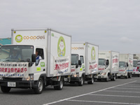
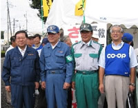

９月２日(日)、第28回八都県市(埼玉県・千葉県・東京都・神奈川県・横浜市・川崎市・千葉市・さいたま市)合同防災訓練(埼玉会場)が「パストラル加須」(加須市)を主会場に行われ、全体で約4,500人が参加しました。
当日は早朝、埼玉県東部を震源域とする震度６強、マグニチュード7.4の直下型地震発生を想定して行われました。
■埼玉県との「基本協定」にもとづき10回目の参加
上田清司県知事や国会議員、県議会関係、加須市長、市議会関係の皆さんをはじめ、多くの県域・地域団体が参加しました。広域搬送訓練車両をはじめとした企画などで、県内の生協を広くアピールすることができました。
| ■訓練内容 |
|  |
|
生協車両４台が広域搬送訓練
|
|  |
防災フェア会場の視察に訪れた上田県知事と吉田県議会議長
両端は埼玉県生協連会長（右）と専務（左） |
|
| １． |
広域搬送訓練では、生協の車両４台（さいたまコ－プ２、生協ドゥコープ１、生活クラブ生協１）が、埼玉県から要請のあった救援物資の搬送を想定した訓練と、主会場の行進及び報告を行いました。 |
| ２． |
パネル展示は、労働者共済生協･コープネット事業連合･埼玉県生協連より「新潟県中越沖地震」「新潟県中越地震」「阪神淡路大震災」などを行いました。また、防災グッズの展示､非常持ち出し品チェックリスト・減災のてびきの配布を行い、防災クイズへの参加者には賞品をプレゼントしました。 |
| ３． |
医療生協さいたまは、血圧測定・体脂肪チェックを行い約150人の参加がありました。防災フェア会場の視察に訪れた上田県知事・吉田県議会議長も、血圧測定に参加されました。 |
| ４． |
さいたまコープは、埼玉県と独自に結んでいる協定にもとづき救援物資配布訓練を行い、約800人の方にパンなどの物資配布を行いました。
|
|